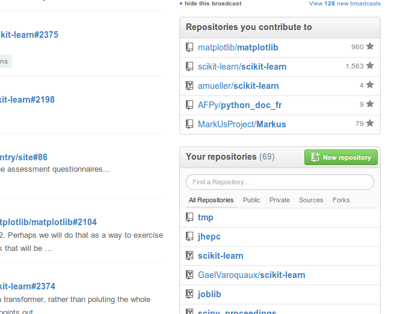
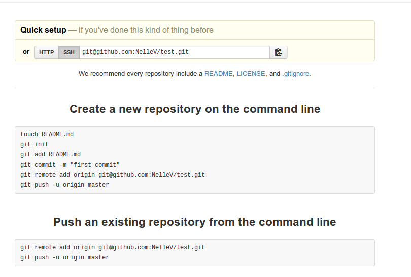

Git and Github¶
This tutorial was made for EuroScipy‘13. It is aimed at researchers, who don’t necessarily know version control. Other EuroScipy tutorials (python based tutorials) can be found here.
Why do I need version control?¶
As researchers, you (probably) want:
- reproducible research
- fast and efficient research
The journal of Irreproducible research.
And ideally, you want to avoid this:

“Piled Higher and Deeper” by Jorge Cham: www.phdcomics.com
Version control systems allow to keep all the historical versions of your software for easy tracking. It also benefits team collaboration and mproves our efficiency. In addition, it can be used as a data center, making build automation and continous integration possible.
In this tutorial, we are going to learn the basics of Git and Github. First, what is Git? Git is a distributed version control software (DCSV). Github is a git hosting platform that provide free git repository for all opensource softwares. Other well-known DCVS are mercurial and bazaar, with their respective hosting platform, bitbucket (which now also supports git repository) and launchpad.
Why did we choose to introduce git, and not mercurial, which is not only build with python, but has also been chosen by CPython (and many other python project) to host their code. That decision was quite straightforward: in the scientific world, git (and github) are much more widely used than mercurial (and bitbucket). A scholar.google search yields 14,100 results for a “github” search, while a “bitbucket” search only returns 2,260 results. If that’s not enough to be convinced, here is a table of python packages, divided in two list: the github hosted ones, and the bitbucket hosted ones.
| Github | Bitbucket |
|---|---|
|
|
Before we start learning git, please be aware that git is a very powerful tool. We will only introduce the basics of Git in this tutorial, and many things may seem obscure and you may (will?) struggle with the concepts. Yet, after a while using it, we get used to the rough edge, and start using more complex commands.
The basic git workflow is:
- modify files in your working directory.
- stage files you’ve worked on. This prepares a snapshot of the directory
- commit the files you’ve staged. This stores that snapshot in the Git repository.
Initializing repositories and configuring git¶
There are several way to initiliaze a git repository. The first is used to initialize git in an existing repository. The second is used to retrieve an existing repository.
To initialize a new project, in the project directory, initialize the git repository with:
git init
This will enable git to keep track of changes in this folder, and subfolders by creating a .git hidden folder containing the git skeleton.
The second way is:
git clone https://github.com/git-lectures/git-lecture-notes.git
This will clone the repository containing the documents of this tutorial.
Note
Each new repository should be in its own directory. One git repository should not be created or cloned in an existing git repository, ie a folder you’ve initialized a git repository and its subfolders.
Before continuing let’s configure git. You will have to do this once per computer you use git config --global:
git config --global user.name "Your Name Comes Here"
git config --global user.email you@yourdomain.com``
git config --global core.editor vim
git config color.ui auto
The --global option corresponds to a user-wide configuration. The configuration will be stored in a hidden repository in your home. You can also configure each git repository individually, by removing this option, or system-wide by replacing the --global option with --system. Usually, we just configure repositories user-wide.
You can check your configuration with:
git config --list
If you’ve configured git several times at different levels, you will probably see several entries twice or three times in the configuration list. The user-wide configuration overrides the system-wide configuration, and the local configuration overrides the user-wide configuration.
Working locally¶
One of the main goal of version control is to save snapshots of your directory. We call those snapshots commits. To each snapshot is associated some metadata: the date the snapshot was taken, who took it, what files where modified, the changes that were made on those files etc. Git will enable you to track the changes made to the files, revert the entire project to a previous snapshot, review changes made over time, view who modified a file.
Now that we know why we want to create a snapshot, let’s see how to do this. Right now, nothing in the project is tracked. First let’s create some directories and files in our directory.
touch README
You now have a new file in the project folder. As mentioned before, git does not track this file yet. First, you need to tell git this file exists:
git add README
Now you can commit it:
git commit -m "Added a README file"
At this point, you have one tracked file, and an initial commit. Each file in the working directory can be in one of two states: tracked or untracked. Any file you have not explicitly added at some point is untracked. Tracked files can themselves be in different states: unmodified, modified or staged.

You can check the status of each file in your directory with the command git status. This command will display all untracked files, and modified and staged files in your directory:
touch AUTHORS
git status
Note as the README file is not listed, while the AUTHORS file is there. Now let’s add the AUTHORS file. The AUTHORS file is now tracked, and staged:
git add AUTHORS
git status
git add is also used to stage file. In fact, running git add on an untracked file not only tracks it, but stages it. git commit will take a snapshot of the staged files:
git commit -m "Added the AUTHORS file"
And here is the second commit! Sometimes, you may want to look at the changes you’ve made to a modified file:
git diff
To look at the changes you’ve made in the staged files, simply use:
git diff --cached
And to view the history of all commits:
git log
Now, let’s try to rm AUTHORS:
rm AUTHORS CONTRIBUTORS
git status
You can see that the AUTHORS file is in red, and marked as deleted. Yet, running git add on this file doesn’t move the change in the staging area. To remove a file that has been tracked with git, use the git rm command. In a similar fashion, git mv can be used to move a file.
Because to err is human, you may want to cancel some stages. Two scenarios may occur: (1) you have staged a file you do not want to commit (2) you have made some changes on a file you want to cancel.
First, let’s assume you’ve staged a file you want to unstage:
touch TODO
git add TODO
To unstage it, run:
git reset HEAD TODO
The syntax is git reset HEAD <filename>. We will explain what HEAD is later on.
In the second case, you’ve modified a file and you want to cancel the changes. To do so, use git checkout <filename>. If you run git status, you can notice git reminds you what command to use for which action.
Exercises¶
- Create a folder called GitTutorial
- Inside it, initialize an empty git repository (git init)
- Create an AUTHORS file, a TODO file and a README file.
- Add the AUTHORS file to the staging area. (git add)
- Check the status of the repository (git status)
- Add the two other files to the staging area (git add)
- Commit your changes (git commit).
- Now rename the AUTHORS file to CONTRIBUTORS (git mv)
- Add your name to the CONTRIBUTORS file.
- Cancel the changes you’ve made to this file.
Working with a distant repository with github¶
Up to now, we’ve been working locally on our computer. As researched and computer scientist, you may want to share your work, (or better contribute to an opensource project!). This is where github comes in handy. Github is a web hosting plateform for git projects. Not only does it provide free git repository for opensource projects (private ones can be purchased, or asked for free for students and women), but it provides great tools to review code, manage projects, release packages and publish documentation. Most of the scientific python code you use are hosted on github.
Now, let’s go on github, and create an account. Once this is done, we can easily create a new project by cliking on the green button, on the main page.
Github redirects you to a page, where you specify the name of the repository and a few information. By default, git repositories hosted on github will be public. If you want private repositories, you either have to pay 7$ per months. If you are a woman or/and in academics, you can also ask for free private repositories [1] [2].
| [1] | Free github reposytories for women |
| [2] | Github for academics |
Github then displays a page with a url, and some information on how to proceed to configure your local repository. Note that if you decide to create a README file, a Licence or a .gitignore on github, it will automatically commit.
To use this new git repository, we are going to associate to this url a name. To add a new remote Git repository as a shortname you can reference easily, run git remote add <shortname> <url>:
git remote add origin <github_url>
The <github_url> can be new referenced as origin. To check which remotes you’ve added, run:
git remote
or:
git remote -v
Now that you’ve added this shortcut, you can push new changes to the remotes:
git push origin master
And now, checkout your github repository !
You can also fetch changes from a github repository:
git fetch origin
This will fetch all the changes of all branches from the remote (we will see branches later one). Yet, it will not merge those changes with your work.
Sometimes, you may want to rename or remove a remote. To do so, run git remote rename <old_remote_name> <new_remote_name> and git remote rm <remote_name>.
Branching and merging¶
To understand what a branch is, let’s first go back to what a commit is. A commit is a snapshot of a repository at a certain time. Each commit contains metadata: a hash to identify the commit, the author name, date etc. It also contains a link to the parent commit. Hence, committing creates a sort of linked list of commits.
{kind=link}
A branch is just a pointer to a commit:
{kind=link}
In fact, you’ve been using a branch called master since the beginning. Creating a new branch just adds a pointer to a commit:
{kind=link}
Let’s now create a new branch and call it testing. You can either use the commands:
git branch testing
Now, how does github know in which branch you are? It just creates a pointer called HEAD to the current working branch:
{kind=link}
You can check which branch you created by running:
git branch
The branch in green marked with an asterix is the branch you are currently working on. To switch branch, run:
git checkout testing
You can create and change branch in a one-liner:
git checkout -b testing
If you add commits on both master and testing, the code can diverge:
{kind=link}
Now let’s add a new commit:
vim AUTHORS
git add AUTHORS
git status
git commit -m "Added a new author"
You’ve now created a new commit in branch testing. You can easily go back to the master branch by running:
git checkout master
Checking out a branch will restore the tracked files to the state they were at the last commit you created on the branch you are going back to. Note that if you have uncommitted or staged changes, git will not permit to switch branches.
To incorporate the changes of the branch testing into master, you need to merge testing in master. To do so, make sure you are in branch master (using git branch), and run the following command:
git merge testing
You can use git log to check that the changes have been merged into master. Once a branch has been merged, you can delete it:
git branch -d testing
Remember how, in the previous section, we discussed how to fetch changes from a remote repository using git fetch? We also said fetching the changes did not incorporate them into your working repository. So what does it do... Git fetch updates a series of branch from a remote, let say origin, by creating and updating remote branches called origin/branch_name. If you wan to update your branch master with the changes you’ve pulled into origin/master, you need to merge origin/master onto master:
git merge origin/master
You can checkout the remote branches, but you should never (never ever ever!!!) work in those branches.
Exercises¶
- Create a github account.
- Create a git project. Do not add a readme file, a .gitignore file, or anything thing to this project through the github interface. This would create a commit and be quite annoying for the rest of the exercise.
- Add a remote called origin to your local git repository (git remote add). Note that github tells you how to do this.
- Push your changes to the remote (git push) and check your changes do appear on Github.
- Now create a branch called fix. Edit the README file (add a title to it), add it to the staging area and commit it.
- Push this branch on the github repository:: git push origin fix. This branch should appear in the github interface.
- Now merge the changes back to your master branch.
Setting up a remote directory¶
In 3 commands: on the server, create a directory which is going to contain the git repository:
mkdir my_directory.git
You then need to initialize the git repository with specific options:
git init --bare --shared
You can now clone the repository from your local machine:
git clone user@server:my_directory.git
- ``git clone --bare --shared my_project my_project.git``
- ``scp -r my_project.git user@git.example.com:/opt/git``
- ``git clone user@git.example.com:/opt/git/my_project``